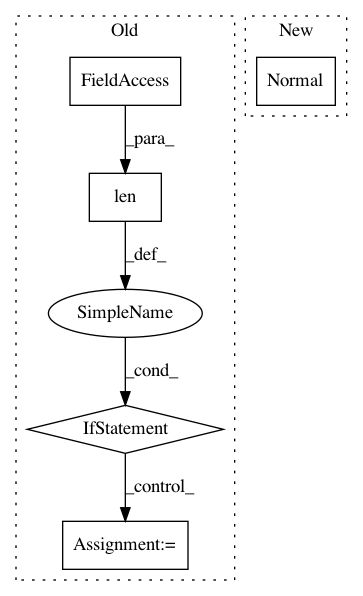

784d00f0c38fb5fd77aed0a6dffb93cc98a0c990,gpytorch/likelihoods/gaussian_likelihood.py,GaussianLikelihood,pyro_sample_y,#GaussianLikelihood#Any#Any#Any#Any#,87
Before Change
noise = noise.squeeze(0)
y_lazy_covar = DiagLazyTensor(var_f + noise.expand_as(var_f))
y_dist = MultivariateNormal(y_mean, y_lazy_covar)
if len(y_dist.batch_shape):
y_dist = y_dist.__class__(
y_dist.mean.contiguous().view(-1), BlockDiagLazyTensor(y_dist.lazy_covariance_matrix)
)
y_obs = y_obs.view_as(y_dist.mean)
pyro.sample(name_prefix + "._training_labels", y_dist, obs=y_obs)
After Change
noise = noise.squeeze(0)
y_dist = pyro.distributions.Independent(
pyro.distributions.Normal(y_mean, (var_f + noise.expand_as(var_f)).sqrt()),
reinterpreted_batch_ndims=y_mean.dim(),
)
In pattern: SUPERPATTERN
Frequency: 3
Non-data size: 5
Instances
Project Name: cornellius-gp/gpytorch
Commit Name: 784d00f0c38fb5fd77aed0a6dffb93cc98a0c990
Time: 2019-01-29
Author: gpleiss@gmail.com
File Name: gpytorch/likelihoods/gaussian_likelihood.py
Class Name: GaussianLikelihood
Method Name: pyro_sample_y
Project Name: cornellius-gp/gpytorch
Commit Name: cbfd111192d2b1ed7a43ebfac3178d31b844b4cd
Time: 2019-03-26
Author: gpleiss@gmail.com
File Name: gpytorch/models/pyro_variational_gp.py
Class Name: PyroVariationalGP
Method Name: model
Project Name: cornellius-gp/gpytorch
Commit Name: cbfd111192d2b1ed7a43ebfac3178d31b844b4cd
Time: 2019-03-26
Author: gpleiss@gmail.com
File Name: gpytorch/likelihoods/gaussian_likelihood.py
Class Name: _GaussianLikelihoodBase
Method Name: forward